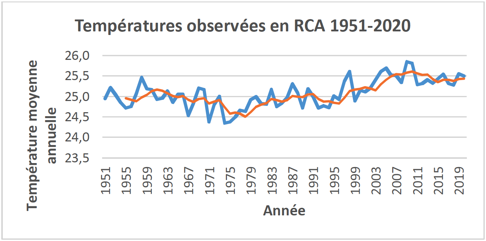
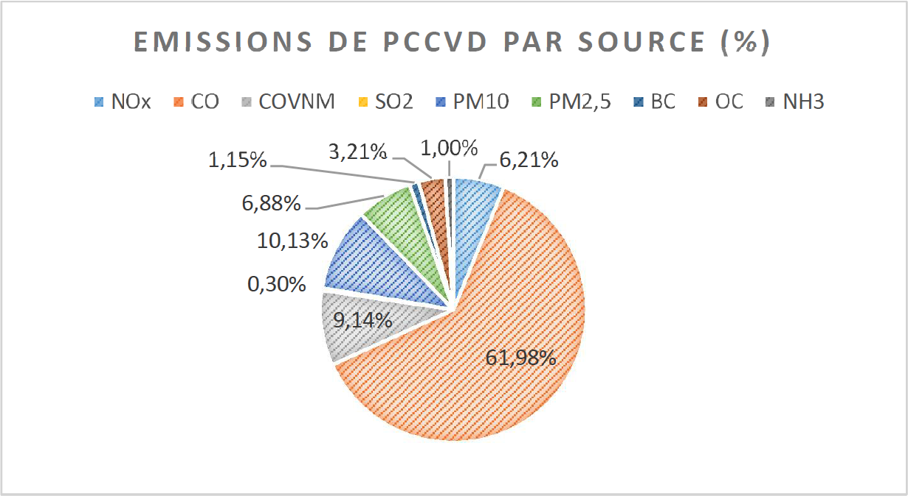
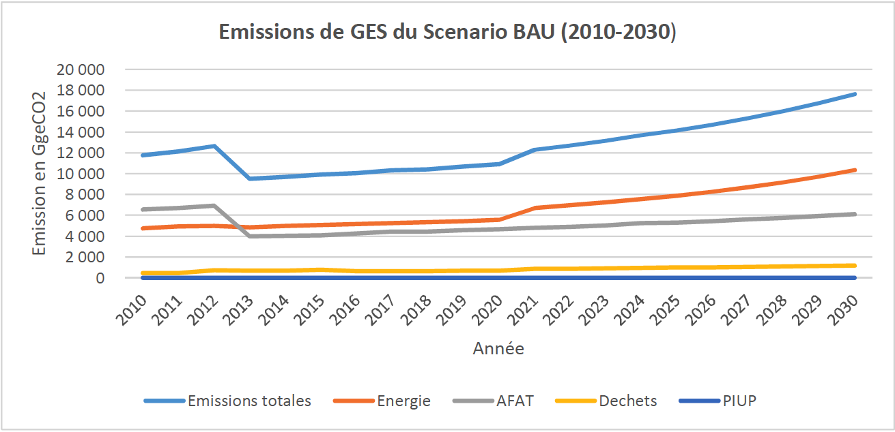
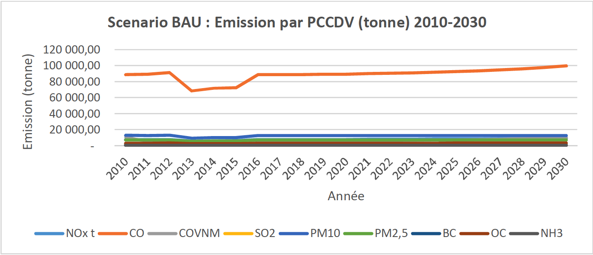
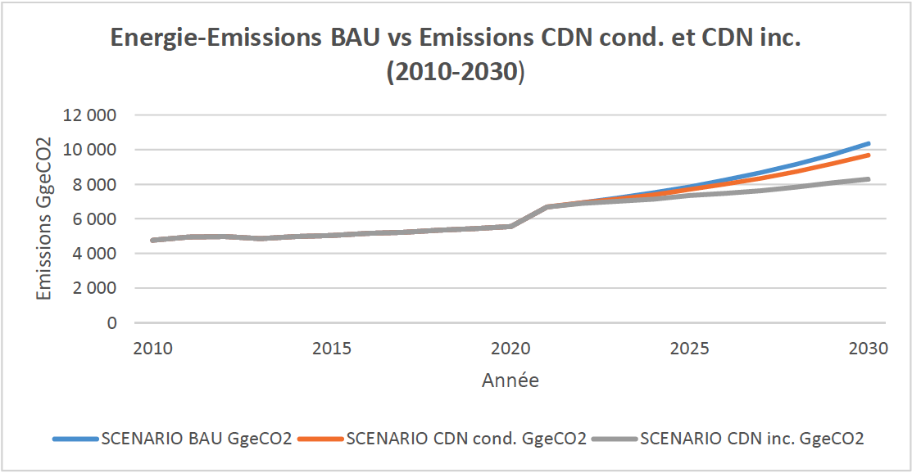
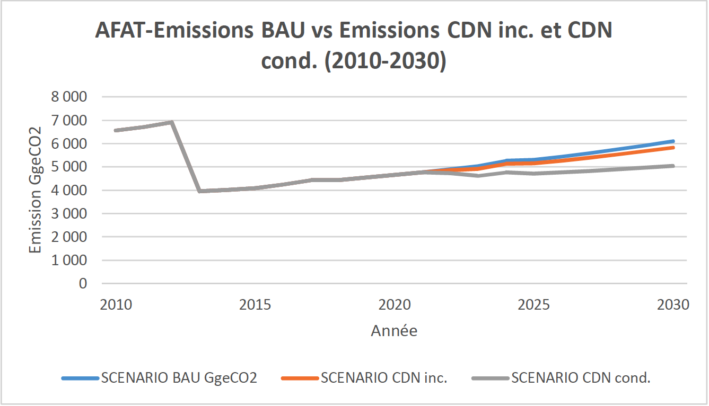
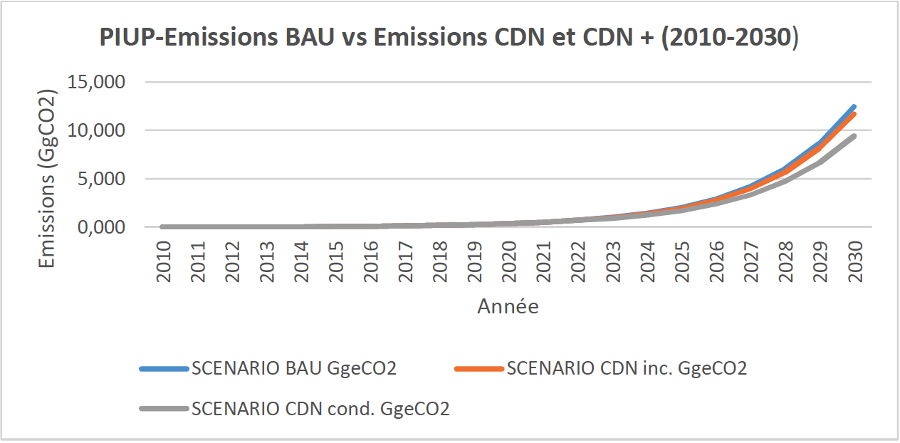
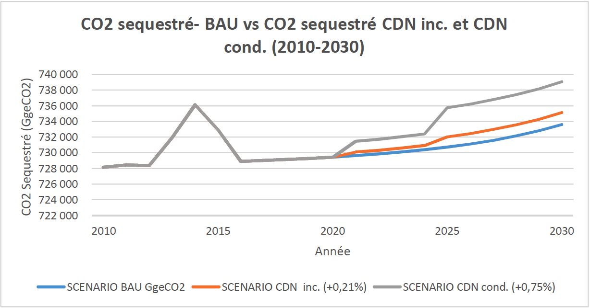
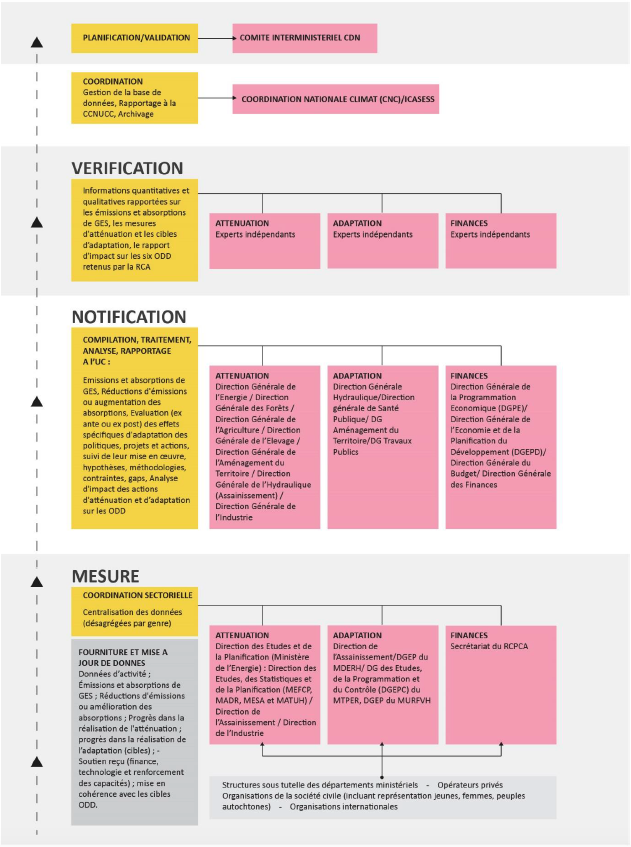

Octobre 2021
La révision de la Contribution Déterminée au niveau National (CDN) s’inscrit dans la continuité des objectifs poursuivis par le Gouvernement de la République Centrafricaine dans le cadre du Plan National de Relèvement et de Consolidation de la Paix (RCPCA), principal instrument de planification stratégique du pays. Elle consolide les acquis de la première génération de CDN et l’améliore significativement du point de vue méthodologique.
Elle se fonde sur les conséquences probables des variations et changements climatiques projetés à l’horizon 2030, l’évolution à date des émissions et absorptions de gaz à effet de serre, les impacts et vulnérabilités existantes et potentielles, pour :
Décrire un scenario tendanciel (ou Scenario Business as Usual-BAU) des émissions de gaz à effet de serre sur le cycle 2010-2030 dans les secteurs les plus émetteurs : Energie ; Agriculture, foresterie et autres affectations des terres (AFAT) ; Procédés industriels ; Déchets ;
Proposer des mesures d’atténuation susceptibles d’infléchir la courbe tendancielle selon un scenario inconditionnel (investissements consentis par l’Etat) et un scenario conditionnel (besoins d’investissement additionnels requis de la communauté internationale)
Identifier, selon un scenario conditionnel et un scenario inconditionnel, les mesures d’adaptation dans les secteurs les plus vulnérables (Agriculture, Energie, Foresterie, Ressources en Eau, Santé, Aménagement du territoire, Infrastructures et habitat), en cohérence avec les objectifs poursuivis par la planification sectorielle.
Il apparait ainsi, selon le scenario tendanciel, une évolution des émissions de gaz à effet de serre de 10 040 GgeCO2 en 2010 à 14141 GgeqCO2 en 2025 et 17 644 GgeqCO2 en 2030. La capacité de séquestration sur les mêmes horizons est respectivement de 730 714 GgCO2 et 733 607 GgCO2.
Les mesures d’atténuation prises généreront, selon le scenario inconditionnel, une réduction des émissions de gaz à effet de serre respectivement de 9,03% et 11,82% aux horizons 2025 et 2030 par rapport à la situation de référence ; et selon le scenario conditionnel 14,64% et 24,28% aux horizons 2025 et 2030 par rapport à la situation de référence.
La CDN de la RCA s’appuie sur l’inventaire existant des polluants climatiques de courte durée de vie (PCCVD), pour élargir le spectre des gaz couverts, en plus des gaz à effet de serre. Les émissions du carbone organique qui (CO) représentent 61,9% des émissions totales de PCCVD, connaitraient sous l’effet des mesures d’atténuation proposées, un infléchissement significatif en même temps que les autres PCCVD (13,67% à -55,31% selon le type de polluant à l’horizon 2030).
Au titre des mesures d’adaptation, les actions ciblées proposées dans les secteurs les plus vulnérables, devraient permettre, à l’horizon 2030, un repli des impacts et une réduction des vulnérabilités générées par les changements climatiques actuels et futurs.
Les besoins financiers associés à la mise en œuvre de l’ensemble des actions ainsi décrites, sont estimés à 1,764 milliard$ dont :
1,32 milliard $ pour l’atténuation : 236 millions$ en inconditionnel et 1,08 Milliard$ en conditionnel ;
443,87 millions de dollars pour l’adaptation : 44,38 millions$ en inconditionnel et 399,48 millions$ en conditionnel.
Le suivi de la mise œuvre des mesures d’atténuation et d’adaptation et du soutien reçu en technologie, en renforcement de capacités et en financement, est assuré grâce à un dispositif de mesure, de notification et de vérification qui s’appuie sur le dispositif national de suivi des ODD. Ce dispositif MNV facilite, entre autres, la mise à jour des inventaires et le rapportage périodique des progrès réalisés par la RCA à la Convention Cadre des Nations Unies sur les Changements Climatiques (CCNUCC).
AEP : Alimentation en eau potable
AFAT : Agriculture, foresterie et autres affectations des terres
AR6 : Sixième rapport d'évaluation (RE6) du Groupe d'experts intergouvernemental sur l'évolution du climat (GIEC)
ATPC : Assainissement Total Piloté par les Communautés
BAU : Business As Usual
CCNUCC : Convention Cadre des Nations Unies sur les Changements Climatiques
CDN : Contribution Déterminée au niveau National
CO : Carbone organique
CO2 : Dioxyde de carbone ou gaz carbonique
COVNM : Composés organiques volatils non méthaniques
CH4 : Méthane
DGEP : Direction Générale des Etudes et de la Planification
DGEPC : Direction Générale des Etudes, de la Programmation et du Contrôle
DGPC : Direction générale de la protection civile
DPEN : Document de Politique Energétique Nationale
HFC : hydrofluorocarbures
ICASESS : Institut Centrafricain des Statistiques et des Etudes Economiques et Sociales
ICRA : Institut Centrafricain de la Recherche Agronomique
GES : Gaz à effet de serre
IDH : Indice de Développement Humain
GPL : Gaz de Pétrole Liquéfiés
MDERH : Ministère du Développement de l’Energie et des Ressources Hydrologiques
MNV : Mesure, Notification, Vérification
MTPER : Ministère des Travaux Publics et de l’Entretien Routier
MURFVH : Ministère de l’Urbanisme, de la Réforme Foncière, de la Ville et de l’Habitat
NOx : Oxydes d'azote
N2O : Protoxyde d'azote ou oxyde nitreux
ODD : Objectifs de Développement Durable
PIUP : Procédés Industriels et Utilisation des Produits
PCCDV : Polluants climatiques de courte durée de vie
PM10 ; PM 2.5: Particules en suspension
PNIASAN : Programme National d’Investissement Agricole de Sécurité Alimentaire et Nutritionnelle
PNA : Plan National d’Adaptation
PFNL : Produits forestiers non ligneux
SODECA : Société de distribution d'eau de Centrafrique
RCPCA : Plan National de Relèvement et de Consolidation de la Paix
SDRASA : Stratégie de Développement Rural, de l’Agriculture et de la Sécurité Alimentaire
SNAT : Schéma National d’Aménagement du Territoire
La révision de la CDN de la RCA répond à l’urgence d’une action ambitieuse face à la crise climatique mondiale et à l’augmentation de la température mondiale.
En cohérence avec la première CDN de 2016 et les dispositions pertinentes des décisions 1/CP.21, 4/CMA.1 et 9/CMA.1 de la Convention Cadre des Nations Unies sur les Changements Climatiques (CCNUCC), la CDN révisée confirme l’aspiration du pays à contribuer significativement aux efforts mondiaux de lutte contre les changements climatiques. Cette deuxième génération présente des avancées importantes par rapport à la première :
Le processus de formulation a été mené de façon inclusive, en mettant à contribution les différents acteurs regroupés autour d’un Comité multi acteurs assurant le pilotage stratégique et la validation des résultats, et des groupes de travail sectoriels (six au total), chargés de proposer et/ou d’amender les contribuions proposées, au titre de l’atténuation et de l’adaptation. Ainsi, les données collectées auprès des fournisseurs primaires sont de meilleure qualité. Le traitement et l’analyse se sont appuyés sur l’expertise des organes officiels en charge des statistiques sectoriels.
Elle couvre davantage de secteurs et de gaz :
a. Les secteurs et sous-secteurs couverts incluent, outre ceux de la première génération, le transport, les mines, l’aménagement du territoire et l’habitat, conformément aux recommandations du rapport d’évaluation de la première CDN.
b. La couverture des gaz à effet de serre a été étendue aux hydrofluorocarbures (HFC), en plus du gaz carbonique (CO2), du méthane (CH4) et de l’oxyde nitreux (N2O). Mieux, les polluants climatiques de courte durée de vie (PCCDV) ont été pris en compte, en raison de leur rôle potentiel dans la réduction du réchauffement global.
La CDN révisée s'appuie sur une base de données améliorée et plus robuste pour estimer les émissions et les absorptions du scénario de référence : la série temporelle utilisée est présentée avec des données annuelles, contrairement à la première CDN, où les résultats sommés sur la série temporelle 2003-2010, présentent des surestimations, en particulier dans le secteur Agriculture, foresterie et autres affectations des terres (AFAT). Aussi, le scenario tendanciel ou scénario BAU est-il plus réaliste et plus crédible, car construit sur davantage de données désagrégées et de qualité, et couvrant plus de secteurs.
Les implications des corrections indiquées supra sont une révision des émissions du scénario tendanciel par rapport à la première CDN. Elles sont de 10 040 GgeCO2 en 2010 et de 17 643 GgeCO2 à l’horizon 2030.
Les ambitions de réduction des émissions de gaz à effet de serre de la CDN révisée sont, en valeur relative, plus importantes par rapport à la précédente (24,28% d’ici 2030 par rapport au scénario tendanciel, contre 5% pour la première CDN). En valeur absolue, cette réduction est moins importante : elle est de 4 284,42 GgeCO2 contre 5 500 GgeCO2 pour la première CDN.
Les mesures de mitigation proposées intègrent les mesures les plus réalistes de la première CDN et les consolident par de nouvelles mesures.
La planification de l'adaptation est rendue plus robuste par des mesures fondées sur des objectifs ciblés, en cohérence avec les objectifs sectoriels.
Un dispositif de mesure, de notification et de vérification est proposé.
Au regard des améliorations que le processus de révision a rendu possible, la RCA dispose sur le moyen terme (horizon 2030) d’un outil efficace de pilotage des actions publiques qui tiennent compte des effets projetés des changements climatiques, et des moyens de mitiger ces effets.
Le climat en République Centrafrique se caractérise par une évolution tendancielle à la hausse de la température annuelle moyenne d'environ 0,3°C par décennie, amorcée à partir des années 701. Cette variation différenciée selon les zones climatiques, augmente plus rapidement à partir des années 50 surtout dans les zones du sud-ouest. Sur les trente dernières années, les précipitations annuelles présentent une légère tendance à la hausse estimée à 8%2. Cette augmentation relative s’accompagne d’une évolution à la hausse des évènements extrêmes matérialisés par la hausse du nombre de jours de pluie avec 10 mm de précipitations sur la même période. Les aléas climatiques les plus marqués durant ces dernières années sont les tempêtes, les inondations (zones du Sud-Ouest 3 ), et les sécheresses (au Nord). Les conditions climatiques demeurent favorables aux épidémies liées aux maladies bactériennes et virales. La probabilité d’occurrence d’épidémies annuelles de méningite à méningocoques pendant la saison sèche, demeure très forte dans la partie Nord qui se trouve dans la ceinture méningitique.

Figure 1: Températures observées en RCA 1951-2020 (Source : CCKP, 2021)
Figure 2: Pluies moyennes annuelles observées en RCA: 1951-2020 (Source : CCKP, 2021)
|
Cmip5 |
Projections selon un scenario RCP 8.54 |
||||
|
Observations (1986 à 2005) |
Horizon 2030 |
Horizon 2050 |
Horizon 2070 |
Horizon 2090 |
|
|
Anomalie de température annuelle (°C) |
+0,35 °C par décennie |
+0.7 to +1.5 (+1.1°C) |
+1.4 to +2.7 (+1.9°C) |
+2.3 to +4.2 (+2.8°C) |
+3.1 to +5.7 (+3.8°C) |
|
Anomalie de précipitation annuelle (mm) |
+8 % |
-18.4 à +21.9 (0.8 mm) |
-21.0 à +29.6 (1.7 mm) |
-21.5 à +38.5 (5.5 mm) |
-28.2 à +50.4 (6.6 mm) |
|
Fortes pluies (%) |
-2 à +14% |
-2 à +22% |
|||
|
Périodes de sécheresse (jours) |
-9 à +3 jours |
-15 à +3 jours |
|||
Tableau 1: Changements projetés (Source : CCKP-2021 & GERICS-2015)
Les projections de température montrent une augmentation entre 0.7 et 1.5°C d'ici 2030 pour le scénario RCP 8.5, et une hausse de 1.4 à 2.7°C d'ici le milieu du 21e siècle5 par rapport à la période de référence 1986-2005. Les projections pour les précipitations annuelles indiquent une légère tendance à l'augmentation des précipitations totales annuelles6.
Il est attendu une hausse probable de la variabilité pluviométrique marquée par l’augmentation de la fréquence (forte tendance) et de l’intensité (légère tendance) des événements extrêmes7 susceptibles de conduire à des occurrences d’inondation fluviale (voir figure 3) sur une grande partie du pays, et d’inondation urbaine dans les régions d’Ombelle Mpoko (Bangui) et Haute Kotto (Bria). En ce qui concerne les périodes sèches, les risques les plus élevés sont localisés dans les régions de Vakaga et Haute Kotto.
Figure 3: Risque d’inondation fluviale, urbaine et de sécheresse en RCA (source : ThinkHazard, 2021)
Au niveau macro-économique, ces changements projetés présentent d’autant plus de risques sur les perspectives de développement économique, que la phase de relance amorcée en 2017 a connu des infléchissements en 2018 et en 2020, en termes de taux de croissance du PIB. Ce taux qui devrait connaitre un effet rebond, avec l’achèvement des projets énergétiques et la reprise des activités agricoles et minières, ne pourra se maintenir que si l’impact de la variabilité et des changements climatiques ne compromettent pas, entre autres facteurs, les ambitions nationales. En effet, en Afrique Centrale un réchauffement de 1°C au-dessus de la moyenne historique est associé à une diminution d'environ 0,7 point de pourcentage de la croissance du PIB, allant de -1,3 à -0,038.
Le tableau 2 présente les prévisions de croissance du PIB, et la figure 4 l’effet potentiel du changement climatique sur le PIB projeté de la RCA9.
|
2017 |
2018 |
2019 |
2020 |
2021 |
2022 |
2023 |
|
|
Taux de croissance du PIB (%) |
4,5 |
3,8 |
4,5 |
1,7 |
2,1 |
5 |
5 |
Tableau 2: Evolution du taux de croissance du PIB de la RCA sur la période quinquennale 2017-2021 (Source : MEPC, 2020)

Figure 4: Impact économique du changement climatique sur la République centrafricaine (Source : Stanford, 2021)
|
GgeCO2 |
3ième Communication Nationale Série : 2010-2016 Année de référence : 2010 |
|
Energie |
5151,99 |
|
Agriculture, foresterie et autres affectations des terres (AFAT) |
4244,36 |
|
Déchets |
643,779 |
|
Procédés Industriels et Utilisation des Produits (PIUP) |
0,078 |
|
Émissions globales (hors absorptions de la foresterie) |
10 040,20 |
|
Absorptions AFAT |
728 896 |
Tableau 3: Synthèse des émissions de la troisième communication nationale (Gg CO2e)
Le tableau ci-dessus présente le profil des émissions de gaz à effet de serre (C02, CH4, N20, HFC) dans les secteurs ci-après : Energie ; Agriculture, foresterie et autres affectations des terres (AFAT) ; Procédés industriels ; Déchets. Les émissions les plus significatives interviennent dans les secteurs de l’énergie et de l’AFAT qui représentent près de 94% des volumes totaux (voir figure ci-dessous).

Figure 5: Répartition des émissions de GES par secteur (Source : Troisième Communication Nationale)
Il faut toutefois noter que malgré ses importantes émissions, les écosystèmes forestiers et de prairies de la RCA demeurent un important puits de carbone, totalisant une capacité de séquestration estimée à 728 896 GgeCO2.
Sur le même registre, et en se fondant sur l’hypothèse d’une réduction potentielle du réchauffement global à court terme de 0,4-0,5°C d’ici 205010 par les polluants climatiques de courte durée de vie (PCCDV)11, leur inventaire a été réalisé12. Aussi, en plus des gaz à effet de serre (C02, CH4, N20, HFC), les principales sources d’émissions en ce qui concerne les PCCDV demeurent les secteurs AFAT et Energie. Les gaz les plus émetteurs sont par ordre d’importance : le carbone organique (CO), les particules en suspension (PM10), et dans une moindre mesure les oxydes d'azote (NOx), les PM 2.5, les composés organiques volatils non méthaniques (COVNM).
|
NOx |
CO |
COVNM |
SO2 |
PM10 |
PM2,5 |
BC |
OC |
NH3 |
TOTAL |
|
|
Emissions (t) |
10 786 |
107 740 |
15 894 |
527 |
17 609 |
11 956 |
1 996 |
5 574 |
1 746 |
173 833 |
|
% |
6,21% % |
61,98% |
9,14% |
0,30% |
10,13% |
6,88% |
1,15% |
3,21% |
1,00% |
100% |
Tableau 4: Répartition des émissions de PCCDV par source

Figure 6: % d'émission des PCCVD par source
La vision de la RCA en matière d’atténuation est la promotion d’un développement à faible émission de carbone, par la réduction d’ici 2030 des émissions de 10% à 25% (scénario inconditionnel et conditionnel) par rapport au scénario tendanciel. Elle se décline en plusieurs objectifs : (i) la valorisation des ressources énergétiques renouvelables et l’économie d’énergie ; (ii) la promotion de l’agroécologie ; (iv) l’exploitation durable des ressources naturelles ; et (v) l’amélioration du cadre de vie.
SCENARIO BAU OU SCENARIO TENDANCIEL (2010-2030)
Le scénario tendanciel ou scenario Business as Usual (BAU) des émissions de gaz à effet de serre (C02, CH4, N20, HFC) sur le cycle 2010-2030 est représenté ci-dessous pour les secteurs : Energie ; Agriculture, foresterie et autres affectations des terres (AFAT) ; Procédés industriels ; Déchets. Les émissions aux horizons 2025 et 2030 de la RCA sont respectivement de 14141 GgeqCO2 et 17 644 GgeqCO2. La capacité de séquestration sur les mêmes horizons demeure élevée. Elle est respectivement de 730 714 GgCO2 et 733 607 GgCO2.
En ce qui concerne les PCCV, le carbone organique (CO) devrait représenter 71% des émissions de polluants climatiques de courte durée de vie.

Figure 7: Emissions de GES du scenario BAU (2010-2030)

Figure 8: Emission des PCCVD-Scenario tendanciel (2010-2030)
Au niveau sectoriel, les mesures d’atténuation déclinées ci-dessous couvrent les activités pour lesquelles des investissements sont prévus pour être consentis par l’Etat (CDN inconditionnelle), et les activités pour lesquelles des besoins d’investissement additionnels sont requis (CDN conditionnelle). Pour l’ensemble des activités indiquées infra, la CDN s’assurera d’un accès équitable aux opportunités économiques entre genre et ciblera en particulier les jeunes et les peuples autochtones dans les zones où ils sont présents.
SECTEUR ENERGIE
Le Document de Politique Energétique Nationale (DPEN) soutient un objectif de contribution à la croissance économique, à l’amélioration de la qualité de vie dans le respect de l’environnement par l’augmentation du taux d’accès à l’électricité de 4 à 20% d’ici 2025 et la sécurisation de l’approvisionnement en énergie. Cette ambition est déclinée pour chaque sous-secteur : énergies traditionnelles, électricité, énergies nouvelles et renouvelables, hydrocarbures, maitrise et économie d’énergie.
En cohérence avec ces ambitions, la CDN de la RCA structure son intervention dans le domaine de l’énergie, selon les actions et objectifs ci-dessous.
|
Sous-secteur énergies traditionnelles |
||
|
Objectifs |
Actions prévues |
|
|
CDN inconditionnel |
Augmenter le rendement de production de charbon de bois de 10% en 2025 et à 25% en 2030 Augmenter la part du charbon dans la consommation finale13 de 4% en 2025 et 12,5% en 2030 |
Promotion des techniques de carbonisation améliorée : Formation ; Valorisation des déchets de transformation industrielle |
|
Pénétration de foyers améliorés dans les ménages, de 5% en 2025 et 10% en 2030 (cibles : 50% de femmes chefs de ménage) |
Amélioration de l’efficacité énergétique de l’utilisation du bois-énergie par l’usage des foyers améliorés : Elaboration de prototypes ; Production et diffusion |
|
|
Ménages équipés en 2025 et 2030 : Eclairage solaire : 5% et 50% Cuiseurs solaires : 5% en 2025 GPL : 10% en 2030 (cibles : 50% de femmes chefs de ménage) |
Modernisation de l’énergie domestique : Etude filière ; Implémentation phase pilote |
|
|
CDN conditionnel |
Augmenter le rendement de production de charbon de bois de 10% en 2025 et à 25% en 2030 Augmenter la part du charbon dans la consommation finale de 8% en 2025 et 25% en 203014 |
Cf. CDN inconditionnel |
|
Pénétration de foyers améliorés dans les ménages de 25% en 2025 et 50% en 2030 |
Cf. CDN inconditionnel |
|
|
2% en 2025 et 15% en 2030 (cibles : 50% de femmes chefs de ménage) |
Réduire l’impact des déchets sur les écosystèmes par la promotion des bio digesteurs (% de valorisation des déchets organiques) |
|
|
Ménages équipés en 2025 et 2030 : Eclairage solaire : 20% et 50% Cuiseurs solaires : 5% et 10% GPL : 25% en 2030 |
Cf. CDN inconditionnel |
|
|
Sous-secteur Electricité |
||
|
Objectifs |
Actions prévues |
|
|
CDN conditionnel |
10 MW en 2030 |
Construction de microcentrales hydroélectriques : études de préfaisabilité et faisabilité, mise en opération, Gestion et maintenance |
|
60 MW en 2030 |
Construction de la centrale hydroélectrique de la Lobaye ; études de préfaisabilité et faisabilité, mise en opération, Gestion et maintenance |
|
|
40 MWc en 2030 |
Construction de centrales solaires : études de préfaisabilité et faisabilité, mise en opération, Gestion et maintenance |
|
|
Sous-secteur Maitrise et économie d’énergie |
||
|
Objectifs |
Actions prévues |
|
|
CDN inconditionnel |
80% de taux de pénétration en 2030 (cibles : 50% de femmes chefs de ménage) |
Promouvoir l’économie d’énergie dans les ménages par la vulgarisation des lampes à basse consommation : Etude filière ; Implémentation phase pilote |
L’ensemble des mesures ainsi prises permettront à la RCA d’infléchir le scénario de référence (ou scénario tendanciel ou « Business as Usual-BAU ») dans le secteur de l’énergie, respectivement de -

Figure 9: Emissions secteur Energie-Scénario tendanciel, CDN inconditionnelle et CDN conditionnelle
|
ENERGIE |
Emissions Scénario tendanciel (GgeCO2) |
Emissions CDN inconditionnel (GgeCO2) |
% réduction CDN inconditionnel |
Emissions CDN conditionnel (GgeCO2) |
% réduction CDN conditionnel |
|
Horizon 2025 |
7 874 |
7 715 |
-2,02% |
7 360 |
-6,53% |
|
Horizon 2030 |
10 362 |
9 705 |
-6,34% |
8 300 |
-19,89% |
SECTEUR AGRICULTURE, FORESTERIE ET AUTRES AFFECTATIONS DES TERRES (AFAT)
La Stratégie de Développement Rural, de l’Agriculture et de la Sécurité Alimentaire (SDRASA) est structurée autour d’une vision à l’horizon 2025 d’une agriculture centrafricaine, « productive, rentable, respectueuse de l‘environnement, s’appuyant sur les initiatives locales et le concept genre, créateur de richesse, et des conditions d‘émergence d’un secteur privé agricole dynamique ». Elle inclut dans sa programmation l’appui à la gestion des ressources naturelles et la mise au point et la diffusion des pratiques d’agriculture durable, comme axes majeurs de sa politique. La SDRASA est complétée par le Programme National d’Investissement Agricole de Sécurité Alimentaire et Nutritionnelle (PNIASAN) qui focalise, entre autres, sur la relance des filières vivrières et le développement des filières d’exportation (coton, café, palmier à huile).
Dans le domaine de la foresterie, la RCA nourrit l’ambition qu’à « l’horizon 2035, les écosystèmes forestiers et les ressources qui leur sont associées, soient cogérés pour les biens et services nécessaires à la paix, à un développement durable et harmonieux, pour la conservation de la diversité biologique et pour la sauvegarde de l’environnement mondial ». Cette vision se reflète dans le Cadre National d’Investissement REDD+ 2020-2025 qui vise à appuyer le pays dans le développement économique et social du secteur AFAT tout en s’assurant d’éviter, de minimiser et de compenser les impacts sur les écosystèmes forestiers.
Dans ces domaines, les objectifs et les mesures d’atténuation se présentent, comme suit :
|
Sous-secteur Agriculture |
||
|
Objectifs |
Actions prévues |
|
|
CDN inconditionnel |
Réduire les pratiques culturales d'abattis-brûlis de 15% en 2025 |
Encourager l’agriculture durable par la promotion de l’agroécologie : Diagnostics locaux, Mise en place de nouveaux référentiels techniques et de nouvelles expérimentations |
|
50 000 ha en 2030, basés sur l’agroforesterie ; incluant le maintien du patrimoine agroforestier des populations autochtones |
Augmenter la capacité de séquestration de carbone des écosystèmes par la promotion des vergers et palmeraies familiales durables |
|
|
15 000ha en 2030 (10 000 ha de plantation caféière, 5 000 ha cacao), basés sur l’agroforesterie (cibles : 50% de femmes chefs de ménage) |
Augmenter la capacité de séquestration de carbone des systèmes agricoles par la relance d’une caféiculture-cacaoculture agroforestière sans déforestation, performante sur le plan agronomique, économique et environnemental |
|
|
CDN conditionnel |
Réduire les pratiques culturales d'abattis-brûlis de 60% en 2030 |
Cf. CDN inconditionnel |
|
100 000 ha en 2030, , basés sur l’agroforesterie |
Cf. CDN inconditionnel |
|
|
15 000ha en 2030 (10 000 ha de plantation caféière, 5 000 ha cacao), basés sur l’agroforesterie |
Cf. CDN inconditionnel |
|
|
Sous-secteur Foresterie et Utilisation des terres |
||
|
Objectifs |
Actions prévues |
|
|
CDN inconditionnel |
12,5% des ménages urbains ayant planté au moins 3 arbres dans leur parcelle d’ici 2030 (cibles : 50% de femmes chefs de ménage) |
Soutien au développement de la foresterie urbaine et péri urbaine (FUPU) |
|
Rendre renouvelable 12,5% de prélèvement de bois de chauffe en 2030 |
Développement d’une agroforesterie associant bois énergie et production agricole ; Mise en place de plantations forestières et agroforestières dans les zones adaptées |
|
|
Réduire les feux incontrôlés de 6,25% en 2025 et 15% en 2030 |
Mise en place et maintenance de pare feux |
|
|
Restaurer 25% des sites post exploitation minière annuellement en 2030 |
Réduire l’impact de l’exploitation minière sur les écosystèmes forestiers nationaux par la promotion des bonnes pratiques minières |
|
|
Préserver 20% des capacités de séquestration des APDS et PNMB en 2030 |
Capitaliser le potentiel carbone des aires protégées de Dzangha-Sangha (APDS) et du Parc National Mbaéré Bodingué (PNMB) |
|
|
CDN conditionnel |
50% des ménages urbains ayant planté au moins 3 arbres dans leur parcelle |
Cf. CDN inconditionnel |
|
Rendre renouvelable 25% de prélèvement de bois de chauffe en 2030 |
Cf. CDN inconditionnel |
|
|
Réduire les feux incontrôlés de 25% en Cf. CDN inconditionnel 2025 et 60% en 2030 |
Cf. CDN inconditionnel |
|
|
Restaurer 50% des sites post exploitation minière annuellement en 2030 |
Cf. CDN inconditionnel |
|
|
Préserver 80% des capacités de séquestration des APDS et PNMB en 2030 |
Cf. CDN inconditionnel |
|
Les actions ainsi prises, conformément aux orientations prioritaires définies dans les instruments de planification et de programmation sectoriels de la RCA dans les domaines de l’agriculture, la foresterie et l’utilisation des terres, permettraient de réduire les émissions de gaz à effet de serre selon le scénario inconditionnel de -2,76% et -4, 33% respectivement en 2025 et 2030 ; et selon le scénario conditionnel de -11,03% et -17,30% respectivement en 2025 et 2030 par rapport au scénario tendanciel (voir figure et tableau ci-dessous).

Figure 10: Emissions secteur AFAT-Scénario tendanciel, CDN inconditionnelle et CDN conditionnelle
|
AFAT/Emissions |
Emissions Scénario tendanciel (GgeCO2) |
Emissions CDN inconditionnel (GgeCO2) |
% réduction CDN inconditionnel |
Emissions CDN conditionnel (GgeCO2) |
% réduction CDN conditionnel |
|
Horizon 2025 |
5 293 |
5 147 |
-2,76% |
4 709 |
-11,03% |
|
Horizon 2030 |
6 106 |
5 842 |
-4,33% |
5 049 |
-17,30% |
SECTEUR DECHETS
Le document de stratégies nationales en matière d’eau et d’assainissement poursuit, au niveau du sous-secteur de l’assainissement, plusieurs sous-objectifs dont l’amélioration du cadre de vie et de la santé des populations ; le développement de stratégies d’action en matière d’hygiène et de déchets solides15, liquides, d’excréta en milieu rural et urbain. Cette ambition se poursuit dans le cadre de la Politique nationale de l´eau (2020-2030) qui a inscrit dans ses axes stratégiques « l’accès de tous à l’eau et à l’assainissement à l’horizon 2030 ». Dans la continuité d’une telle démarche, la gestion rationnelle et durable des déchets demeure un enjeu de taille pour les municipalités en général, et urbaines en particulier, dans un contexte d’amplification de la population urbaine estimée à 41,4 % de la population, et prévue pour atteindre respectivement 48 % et 60 % d'ici 2030 et 2050.
Dans ce domaine, les objectifs et les mesures d’atténuation portent sur le traitement et la revalorisation des déchets municipaux. L’examen, le traitement et l’analyse des mesures de mitigation proposées, montrent que dans le contexte de la RCA, elles sont (i) soit susceptibles de générer des émissions de méthane qui s’ajoutent aux émissions du scénario tendanciel, (ii) soit le pourcentage de réduction demeure marginal (inférieur à 1%) comparativement aux couts induits par l’action. Ainsi, aucune mesure n’est proposée, au titre de cette composante.
SECTEUR PROCEDES INDUSTRIELS ET UTILISATION DES PRODUITS (PIUP)
Le cadre juridique de l’action climatique nationale s’appuie principalement sur la Loi N° 07/018 du 28 décembre 2007 portant Code de l'Environnement qui consacre la protection de l’air, au titre de ses interventions prioritaires. Le pays a également ratifié la Convention de Vienne pour la protection de la couche d’ozone et le Protocole de Montréal qui vise la réduction et l’élimination complète des substances qui réduisent la couche d'ozone.
Au regard des engagements pris par le pays dans ce domaine, les mesures d’atténuation de la CDN dans ce domaine se présentent, comme suit :
|
Sous-secteur Ozone |
||
|
Objectifs |
Actions prévues |
|
|
CDN |
Réduire l’utilisation des appareils à gaz fluorés de 6,25% en 2025 et 12,5% en 2030 |
Réduire les émissions de gaz fluorés |
|
CDN conditionnel |
Réduire l’utilisation des appareils à gaz fluorés de 25% en 2025 et 50% en 2030 |
Réduire les émissions de gaz fluorés |
La mise en œuvre des actions à l’horizon 2025 et 2030 permettra à la RCA de réduire les émissions de gaz à effet de serre, en particulier les hydrofluorocarbures (HFC), selon le scénario inconditionnel de - 3,91% et -6,04% respectivement en 2025 et 2030 ; et selon le scénario conditionnel de -15,65% et -24,16% respectivement en 2025 et 2030 par rapport au scénario tendanciel (voir figure et tableau cidessous).

Figure 11: Emissions secteur PIUP-Scénario tendanciel, CDN inconditionnelle et CDN conditionnelle
|
PIUP |
Emissions Scénario tendanciel (GgeCO2) |
Emissions CDN inconditionnel (GgeCO2) |
% réduction CDN inconditionnel |
Emissions CDN conditionnel (GgeCO2) |
% réduction CDN conditionnel |
|
Horizon 2025 |
2,026 |
1,947 |
-3,91% |
1,709 |
-15,65% |
|
Horizon 2030 |
12,466 |
11,713 |
-6,04% |
9,455 |
-24,16% |
EMISSSIONS ET ABSORPTIONS GLOBALES AUX HORIZONS 2025 ET 2030 : SCENARIO TENDANCIEL, CDN INCONDITIONNEL ET CDN CONDITIONNEL
L’ensemble des mesures agrégées conduisent la RCA à un niveau de réduction des gaz à effet de serre sous scénario inconditionnel de -9,03% et -11,82 respectivement en 2025 et 2030. Sous l’hypothèse d’un appui de la communauté internationale, ces réductions atteindront respectivement -14, 64% et - 24,28 en 2025 et 2030.

Figure 12: Emissions globales-Scénario tendanciel, CDN inconditionnelle et CDN conditionnelle
|
Emissions |
Emissions Scénario tendanciel (GgeCO2) |
Emissions CDN inconditionnel (GgeCO2) |
% réduction CDN inconditionnel |
Emissions CDN conditionnel (GgeCO2) |
% réduction CDN conditionnel |
|
Horizon 2025 |
14 141 |
12 864 |
-9,03% |
12 070 |
-14,64% |
|
Horizon 2030 |
17 644 |
15 558 |
-11,82% |
13 359 |
-24,28% |
Les mesures ainsi prises ont à la fois une inférence sur le repli des émissions de gaz à effet de serre, mais aussi sur l’amélioration du niveau de séquestration du carbone par la biomasse et les sols. Cette capacité d’absorption est en 2030 respectivement de 735 140 GgCO2 et 739 086 GgCO2 sous scenario inconditionnel et sous scenario conditionnel.
|
Absorptions |
CO2 séquestré Scénario tendanciel (GgeCO2) |
CO2 séquestré CDN inconditionnel (GgeCO2) |
% hausse CDN inconditionnel |
CO2 séquestré CDN conditionnel (GgeCO2) |
% hausse CDN conditionnel |
|
Horizon 2025 |
730 714 |
732 036 |
+0,18% |
735 763 |
0,69% |
|
Horizon 2030 |
733 608 |
735 140 |
+0,21% |
739 086 |
+0,75% |

Figure 13: Absorptions globales-Scénario tendanciel, CDN inconditionnelle et CDN conditionnelle
En ce qui concerne les PCCVD, les réductions d’émission par gaz se présentent, ainsi qu’il suit.
|
Horizon 2025 |
Horizon 2030 |
|||||||||
|
Emissions cumulées (tonne) |
CDN |
% |
CDN+ |
% |
Emissions cumulées (tonne) |
CDN |
% |
CDN+ |
% |
|
|
NOx |
61 685 |
58440 |
-5,26 |
57346 |
-7,03 |
68480 |
50039 |
-26,93 |
44945 |
-34,37 |
|
CO |
577 232 |
537033 |
-6,96 |
533620 |
-7,56 |
614099 |
382793 |
-37,67 |
361758 |
-41,09 |
|
COVNM |
10388 |
97569 |
-2,81 |
95 783 |
-4,59 |
117047 |
101052 |
-13,67 |
90019 |
-23,09 |
|
SO2 |
2592 |
2343 |
-9,63 |
2341 |
-9,69 |
2573 |
1158 |
-54,97 |
1150 |
-55,31 |
|
PM10 |
94993 |
88804 |
-6,52 |
87944 |
-7,42 |
98330 |
63212 |
-35,71 |
57920 |
-41,10 |
|
PM2,5 |
67208 |
63659 |
-5,28 |
62816 |
-6,53 |
70846 |
50821 |
-28,27 |
45638 |
-3558 |
|
BC |
12101 |
11760 |
-2,83 |
11517 |
-4,83 |
13048 |
11102 |
-14,91 |
9628 |
-26,21 |
|
OC |
31862 |
30312 |
-4,86 |
29886 |
-6,20 |
33922 |
25210 |
-25,68 |
22572 |
-33,46 |
|
NH3 |
10831 |
10574 |
-2,37 |
10358 |
-4,37 |
11829 |
10389 |
-12,17 |
9040 |
-23,57 |
Tableau 5: Réduction des émissions de PCCDV en scenario inconditionnel et conditionnel
La vision nationale de la RCA sur les changements climatiques est que « à l´horizon 2030, la République Centrafricaine s´insère dans une dynamique de développement socioéconomique soutenu, équitable et durable, car intégrant les défis des changements climatiques dans l´ensemble des secteurs sociaux et productifs ce qui permettra une amélioration du bien-être général de sa population ».
Dans la continuité d’une telle vision, et en cohérence avec les objectifs d’adaptation de l’Accord de Paris, les ODD et les orientations prioritaires définies par le Gouvernement, l’objectif visé en matière d’adaptation est « d´améliorer d’ici 2030 la résilience des communautés et des écosystèmes dans les secteurs socio-économiques les plus vulnérables aux effets néfastes des changements climatiques ».
Au niveau national, la vulnérabilité est davantage marquée dans des domaines inscrits dans le Plan National de Relèvement et de Consolidation de la Paix 2017-2021 (RCPCA) au titre des priorités du Gouvernement. Il s’agit de : l’Agriculture, l’Energie, la Foresterie, les Ressources en Eau, la Santé, l’aménagement du territoire, les Infrastructures et l’habitat. Elle est exacerbée par l'insécurité politique et les inégalités, dans un contexte marqué par une amplification de l'inégalité entre sexes, dont l’indice est considéré comme l'un des plus élevés au monde. Le pays est en effet classé 159ième sur 162 pays selon l'indice des inégalités de genre (GII) 2019 des Nations Unies. Cette inégalité s’est accrue durant les dernières décennies en raison des crises successives, avec un index qui est passé de 0,743 en 1995 à 0,680 en 2019.
Le tableau ci-dessous présente en détail les impacts et vulnérabilités sectoriels, en rapport avec les effets attendus du changement climatique.
|
Horizon |
203016 |
|
Variation température (°C) |
0.2°C 0.4 0.6 0.8 1 1.2 1,4 1.6 1.8 |
|
Anomalie de précipitation (mm) |
-20 -15 -10 -5 0 +5 +10 +15 +20 |
|
Economie nationale |
Régression du PIB de -2,6% à -3,4% en 203017 . Aggravation de l’incidence de la pauvreté. |
|
Agriculture et sécurité alimentaire |
|
|
Foresterie |
|
|
Ressources en Eau |
|
|
Energie |
|
|
Santé |
|
|
Infrastructures et l’habitat/ Aménagement du territoire |
|
Tableau 6: : Impacts et Vulnérabilités sectoriels
Pour atteindre l’objectif général visé en matière d’adaptation, des objectifs intermédiaires et mesures ont été identifiées. Ils sont alignés aux ODD, au RCPCA, au Plan National d’Adaptation, et à la troisième communication nationale du pays.
OBJECTIF 1 : GARANTIR LA SECURITE DES SYSTEMES AGRO-SYLVO-PASTORAUX ET DES RESSOURCES EN EAU, PAR LA CAPTURE DES OPPORTUNITES ASSOCIEES AUX VARIATIONS CLIMATIQUES PROJETEES
Alignement au PNA : Programme national d´investissement agricole, sécurité alimentaire et résilience au changement climatique
|
Option |
Cibles/Année de référence : 2010 |
Actions et mesures pour atteindre les cibles |
|
Agriculture et Elevage |
||
|
Développement d’une agriculture durable, intensive et diversifiée, et promotion d’actions de gestion durable des terres intégrant les jeunes, les femmes et les peuples autochtones |
|
Vulgariser les paquets techniques culturaux performants susceptibles d’induire une amélioration durable de la productivité et la préservation de l'environnement dans un contexte de changements climatiques (variétés résistantes) |
|
Intégrer la neutralité de la dégradation des terres(NDT) dans les priorités nationales ; assurer l’intégration agriculture-élevage dans les espaces culturaux dégradés ; promouvoir les systèmes agro-forestiers de gestion durable des sols ; Assurer le reboisement des surfaces dégradées par les cultures fourragères dans les espaces pastoraux dégradés. |
|
|
Cf. Atténuation-AFAT |
|
|
Développement d’une recherche agricole adaptative aux changements climatiques |
|
Renforcement des capacités techniques (développement variétal, utilisation des modèles d’impact pour la simulation de la productivité et de la production par scénario) ; Renforcement des capacités matérielles de l’ICRA (modèles de simulation , laboratoires, centres de multiplication de semences) |
|
Prévention et Gestion des effets des occurrences climatiques exceptionnelles sur le système agro-sylvo-pastoral |
|
Existence d’un dispositif fonctionnel de prévisions hydro-météorologiques et saisonnières |
|
Amélioration de la résilience climatique des communautés et des systèmes pastoraux traditionnels |
|
Elaboration d’un zonage des ressources naturelles adapté au zonage climatique actuel et projeté, Réhabiliter, construire des retenues d’eau dans certaines zones d’élevage |
|
Installation des parcelles de cultures fourragères, points d’eau améliorés et entretenus ; Assurer le cadre d’approvisionnement des Organisations pastorales en vaccins et médicaments vétérinaires ; Appui aux ménages vulnérables pour le développement d’AGR |
|
|
Foresterie |
||
|
Restauration des paysages déforestés, par le reboisement d’espèces à multisages pour réduire la sensibilité et l’exposition des forêts aux aléas climatiques |
|
Assurer le reboisement des surfaces dégradées par la foresterie urbaine, périurbaine et communautaire ; Réduire la pression sur l’utilisation du bois comme source d’énergie par la Modernisation de l’énergie domestique (cf. atténuation) |
|
Réglementation de l’exploitation artisanale du bois d’œuvre et du bois énergie et mesures de réduction de la pression sur les ressources |
|
|
|
|
|
|
Promotion de l’agroforesterie pour réduire les risques climatiques et diversifier les options économiques |
|
Cf. Atténuation-AFAT Renforcement des capacités techniques et matérielles des parties prenantes sur l’agroforesterie ; Etablir des incitations : semences de qualité, pépinières, matériels de formation et de vulgarisation, identification des marchés de produits. |
|
Soutien et formalisation de la filière et du circuit des produits forestiers non ligneux (PFNL) pour diversifier les sources d’approvisionnement en denrées alimentaires, en situation de crise climatique |
|
Information, formation, Installation des pépinières de multiplication et des unités de transformation ; mise en place de dépôts de collecte et de stockage ; Organisation du circuit de commercialisation des PFNL |
Alignement au PNA : Intégration de l'adaptation au changement climatique dans la gestion nationale et régionale des ressources en eau ; Renforcement de la résilience des zones rurales et urbaines au changement climatique à travers une meilleure gestion des ressources en eau des communautés
|
Option |
Cibles/Année de référence: 2010 |
Actions et mesures pour atteindre les cibles |
|
Ressources en Eau, Services d’eau et d’assainissement |
||
|
Amélioration du cadre de gouvernance du secteur de l’eau et de l’assainissement, en cohérence avec la vulnérabilité actuelle et future des ressources en eau aux changements climatique |
|
|
|
Mise en place d’un système de suivi et de surveillance pour assurer la sécurité de l’eau21 et des usages en contexte de variabilité et de changements climatiques |
|
|
|
Renforcement des capacités institutionnelle des municipalités dans la collecte, la gestion et le recyclage des déchets solides |
|
Bencharmarking ; développement de modules de formation sur la collecte, la valorisation, ; implémentation de la formation, acquisitions des équipements nécessaires |
|
Aménagement des systèmes d’approvisionnement en eau potable, associé à la promotion de l’efficience de l’usage de l’eau |
|
Renforcement des installations de la SODECA ; Extension du réseau dans les grandes villes ; Mise en place des systèmes AEP, forages |
OBJECTIF 2 : ADAPTER LE TERRITOIRE ET LES SYSTEMES ENERGETIQUES AUX CHANGEMENTS CLIMATIQUES ACTUELS ET FUTURS
|
Option |
Cibles/Année de référence : 2010 |
Actions et mesures pour atteindre les cibles |
|
Aménagement du Territoire |
||
|
Conformation des usages des terres et des ressources naturelles, par un dispositif juridique et réglementaire qui intègre le climat actuel et futur |
|
Cartographie participative des usages et droits d’usages ; Etudes techniques sur le potentiel et l’affectation des terres ; Base des données géo référencées des risques et des ressources spécifiques
|
|
Option |
Cibles/Année de référence : 2010 |
Actions et mesures pour atteindre les cibles |
|
Energie |
||
|
Promotion de la carbonisation améliorée des déchets de bois issus de l’exploitation forestière |
Cf. atténuation Sous-secteur énergies traditionnelles |
|
|
Electrification rurale |
Cf. atténuation Sous-secteur Electricité |
|
|
Réglementation et lutte contre l’exploitation artisanale du bois d’œuvre et du bois énergie |
Cf. atténuation Sous-secteur Foresterie |
|
|
Promouvoir la reforestation des zones dégradées par les plantes à croissance rapide pour une utilisation comme bois énergie |
Cf. atténuation Sous-secteur Foresterie |
|
OBJECTIF 3 : INFORMER ET PREPARER LES INFRASTRUCTURES ET HABITATS, LES SYSTEMES DE SANTE, AUX RISQUES CLIMATIQUES, PAR L’AMELIORATION ET LA PRODUCTION D’EVIDENCES DANS CES DOMAINES
|
Option |
Cibles/Année de référence : 2010 |
Actions et mesures pour atteindre les cibles |
|
Habitat et Infrastructures |
||
|
Améliorer les connaissances sur la vulnérabilité de l’habitat et des infrastructures et l’identification des options d’adaptation |
|
Modélisation du changement climatique ; évaluation des risques, impacts et vulnérabilités, et des options d’adaptation ; intégration dans la planification sectorielle |
|
Promotion d’un modèle de construction d’habitat durable, en lien avec la sédentarisation des populations autochtones AKA dans un contexte de changements climatiques |
|
Réalisation du Consentement Libre, Préalable et Eclairé auprès des Autochtones sur la sédentarisation et les habitats durables |
|
Améliorer les systèmes de drainage des eaux pluviales pour anticiper sur les effets des inondations récurrentes dans les villes les plus vulnérables |
|
Infrastructures de drainages, restructuration, relocalisation. |
|
Santé publique |
||
|
Améliorer les connaissances sur la vulnérabilité du secteur de la santé aux changements climatiques et l’identification des options d’adaptation |
|
Modélisation du changement climatique ; évaluation des risques, impacts et vulnérabilités, et des options d’adaptation ; intégration dans la planification sectorielle |
|
Promotion de l’Hygiène et assainissement de base |
|
Renforcement des capacités des acteurs et harmonisations de l’approche ATPC |
|
Développement d’un système de veille pour la prévention et la lutte contre les épidémies et maladies sensibles au climat (paludisme, cholera, méningite, etc.) |
|
Identifier les zones les plus vulnérables ; Mettre en place les outils de traitement et d’analyse des données sur les risques environnementaux et les tendances épidémiologiques ; Identifier ou Etablir le système de diffusion des informations |
MESURES TRANSVERSALES
Alignement au PNA : Mise en place d’un système intégré d'alerte précoce
|
Option |
Cibles/Année de référence : 2010 |
Actions et mesures pour atteindre les cibles |
|
Mesures transversales |
||
|
Modélisation du changement |
|
Appui institutionnel à l’instrumentation et à la production des informations climatiques |
|
Suivi des risques de catastrophes, d’évaluation rapide des besoins post catastrophe (PDNA), et de gestion des opérations |
|
Renforcements des capacités techniques et matérielles de la DGPC (formations et équipements) ; Mise en place d’une plateforme intersectorielle de gestion des risques |
|
Programme spécial d’adaptation pour les peuples autochtones |
|
Evaluations spécifiques des besoins et CLIP, renforcement des pratiques agricoles résilientes aux CC, système AEP, construction des habitats durables, exploitation durable des PFNL. |
|
Education au Climat |
|
Renforcement des capacités des enseignants-chercheurs, Développement de curricula, Validation, Test, Mise en opération |
|
Mobilisation des ressources |
|
Formulation d’un plan d’investissement et de mobilisation de ressources, Renforcement des capacités sur la finance climat |
Les besoins en financement de la CDN sur la décennie 2021-2030 sont estimés à 1,764 milliard$ dont 1,321 milliard $ pour l’atténuation et 443,872 millions de dollars pour l’adaptation. La contribution de la RCA, à partir de ses ressources domestiques est de 280,44 millions$ (soit 16%). La contribution attendue des partenaires internationaux est de 1,483 Milliards $ (soit 84%).
ATTENUATION
|
Secteur |
Cout Inconditionnel (Millions $) |
Cout Conditionnel (Millions $) |
Cout Total (Millions $) |
|
Energie |
58 |
476 |
534 |
|
AFAT |
178 |
606 |
784 |
|
PIUP |
0,29 |
0,15 |
0,44 |
|
Mesures transversales |
0,23 |
2,07 |
2,3 |
|
TOTAL |
236 |
1084 |
1321 |
ADAPTATION
|
Secteur |
Cout Inconditionnel (Millions $) |
Cout Conditionnel (Millions $) |
Cout Total (Millions $) |
|
Agriculture et Elevage |
12,377 |
111,396 |
123,774 |
|
Foresterie |
0,0451 |
22,524 |
22,570 |
|
Ressources en Eau, services d’eau et d’assainissement |
13,05 |
117,45 |
130,5 |
|
Aménagement du Territoire |
0,187 |
1,689 |
1,876 |
|
Energie |
Cf Atténuation |
Cf Atténuation |
Cf Atténuation |
|
Habitat et Infrastructures |
8,22 |
73,98 |
82,2 |
|
Santé publique |
0,15 |
1,35 |
1,5 |
|
Mesures transversales y compris la communication |
8,332 |
74,995 |
83,328 |
|
TOTAL |
44,387 |
399,484 |
443,872 |
La mise en œuvre de certaines actions d’adaptation et d’atténuation exige un recours à des technologies. Le transfert de technologies dans ce domaine comprendra aussi bien le renforcement des capacités que la mise en place d’équipements.
|
Composante |
Besoin en Technologie |
Besoin en renforcement des capacités |
|
Atténuation |
|
Utilisation des technologies géo spatiales pour le suivi des écosystèmes Labour de conservation Agroécologie Gestion des polluants organiques persistants (POPs) Gestion des normes industrielles Définition complète de la ligne de base (baseline) des mesures d’adaptation et d’atténuation |
|
||
|
||
|
||
|
||
|
||
|
||
|
||
|
||
|
||
|
Adaptation |
Produits Forestiers non Ligneux (PFNL) : technologie de transformation et conservation du poivre sauvage |
Agroforesterie Scénarisation et projection climatique Conduite des évaluations de vulnérabilité Développement de curricula intégrant les changements climatiques au niveau primaire et secondaire |
|
Dispositifs d’instrumentation météorologique |
||
|
Technologie non labour simplifiées ou Technologie non labour simplifiées ou Techniques Culturales Simplifiée (TCS) |
||
|
Cultures résistantes à la sécheresse |
||
|
Matériels et outils pour le suivi des alertes de feu de brousse par la télédétection |
Le système MNV proposé couvre les composantes atténuation, adaptation, et finances. Il intègre de façon transversale les ODD (la RCA a retenu six ODD prioritaires à suivre : 4, 8, 10, 13, 16 et 17), le transfert de technologies et le renforcement des capacités.

|
1. |
Informations quantifiables sur le point de référence (y compris, le cas échéant, une année de base) |
|
|
(a) |
Année(s) de référence, année(s) de base, période(s) de référence ou autre(s) point(s) de départ |
Année de référence pour les projections d'émissions : 2010 Année de référence pour l'objectif d'émission BAU : 2030 |
|
(b) |
Informations quantifiables sur les indicateurs de référence, leurs valeurs au cours de la ou des années de référence, des années de référence, des périodes de référence ou d'autres points de départ et, le cas échéant, de l'année cible |
Le niveau d'émission projeté en 2030 est de 17 643 GgeCO2. |
|
(d) |
Cible relative à l'indicateur de référence, exprimée numériquement, par exemple en pourcentage ou montant de la réduction |
La réduction des émissions de GES est de 24,28% par rapport au niveau de référence (BAU) en 2030. |
|
(e) |
Informations sur les sources de données utilisées pour quantifier le(s) point(s) de référence |
La troisième communication nationale de la RCA a été utilisée pour quantifier le niveau de référence des GES L’inventaire intégré des polluants climatiques de courte durée de vie de la RCA a été utilisé pour quantifier le niveau de référence des polluants climatiques de courte durée de vie (PCCDV) |
|
(f) |
Informations sur les circonstances dans lesquelles le pays Partie peut mettre à jour les valeurs des indicateurs de référence |
Le scénario BAU a été mis à jour sur la base des données finales des derniers inventaires disponibles (GES et PCCVD). La RCA prévoit de mettre à jour l'inventaire des GES lors du premier rapport biennal prévue en l’an 2024. Un outil de mesure, de notification et de vérification (MNV) des émissions sera développé et servira à mettre à jour l'inventaire. Les indicateurs de référence peuvent changer à la suite de la mise à jour. |
|
2. |
Délais et/ou périodes de mise en œuvre |
|
|
(a) |
Calendrier et/ou période de mise en œuvre, y compris les dates de début et de fin, conformément à toute autre décision pertinente adoptée par la Conférence des Parties siégeant en tant que réunion des Parties à l'Accord de Paris (CMA) |
1ier Janvier 2022-31 Décembre 2030 |
|
(b) |
Qu'il s'agisse d'un objectif sur une année ou sur plusieurs années, selon le cas |
Objectif sur une année (2030). |
|
3. |
Portée et couverture |
|
|
(a) |
Description générale de la cible |
Les mesures d'atténuation proposées permettront à la RCA de réduire ses émissions de GES par rapport au scénario tendanciel. Le niveau de réduction des GES en 2030 est en valeur absolue de 4284,42 GgeCO2, et en valeur relative de 24,28%. Le niveau de réduction des PCCVD varie de -13,67% à -55,31% selon le type de polluant à l’horizon 2030. |
|
(b) |
Secteurs, gaz, catégories et pools couverts par la contribution déterminée au niveau national, y compris, le cas échéant, conformément aux lignes directrices du Groupe d'experts intergouvernemental sur l'évolution du climat (GIEC) |
Gaz à effet de serre : CO2, CH4, N2O, HFC Polluants climatiques de courte durée de vie : PM2,5, PM10, CN, CO, NOx, SO2, NH3, COVNM |
|
(c) |
Comment le pays Partie a pris en considération les paragraphes 31(c) et (d) de la décision 1/CP.2123 |
La CDN révisée inclut toutes les catégories d’émissions anthropiques ou d’absorptions pertinentes, en cohérence avec les Lignes directrices du GIEC de 2006. Par rapport à la première CDN, la couverture de la CDN révisée est étendue aux PCCVD. |
|
(d) |
Co-bénéfices d'atténuation résultant des actions d'adaptation et/ou des plans de diversification économique des Parties, y compris la description de projets, mesures et initiatives spécifiques des actions d'adaptation et/ou des plans de diversification économique des Parties |
Des co-bénéfices d'atténuation peuvent être attendus de la mise en œuvre des mesures d’adaptation suivantes : Restauration par le reboisement d’espèces à multi usages des paysages déforestés,; Réglementation de l’exploitation artisanale du bois d’œuvre et du bois énergie et mesures de réduction de la pression sur les ressources ; Promotion de l’agroforesterie pour la réduction des risques climatiques et la diversification des options économiques. |
|
4. |
Processus de planification |
|
|
(a) |
a) Des informations sur les processus de planification que le pays Partie a entrepris pour préparer sa CDN et, si disponible, sur les plans de mise en œuvre |
Le processus a été conduit par la Coordination Nationale Climat, avec l’appui de l’initiative Promesse climatique du PNUD. Un Comité de Pilotage (CoPIL) représentatif de toutes les parties (incluant les représentants des organisations de femmes, de jeunes et des peuples autochtones), crée par arrêté ministériel, a fait office de Groupe de Travail Technique Intersectoriel chargé d’accompagner le processus de formulation et de validation des livrables aux différentes étapes. La prise en compte des PCCVD, en plus des gaz à effet de serre est une bonne pratique sur laquelle d’autres pays Parties pourraient s’inspirer. |
|
(c) |
Comment la préparation par le pays Partie de sa CDN a été éclairée par les résultats du bilan mondial, conformément à l'article 4, paragraphe 9, de l'Accord de Paris |
La première CDN de la RCA é été soumise en 2016. Conformément à l'article 4, paragraphe 9, de l'Accord de Paris, cette deuxième CDN est élaborée cinq ans à la suite de la première. Le bilan mondial étant prévu en 2023, la révision de la CDN s’est inspirée du rapport de synthèse de Septembre 2021 de la Convention Cadre des Nations Unies sur les Changements Climatiques (CCNUCC). |
|
5. |
Hypothèses et approches méthodologiques, y compris celles pour estimer et comptabiliser les émissions anthropiques de gaz à effet de serre et, le cas échéant, les absorptions |
|
|
(a) |
Hypothèses et approches méthodologiques utilisées pour comptabiliser les émissions et absorptions anthropiques de gaz à effet de serre correspondant à la CDN du pays Partie, conformément au paragraphe 31 de la décision 1/CP.21 et aux orientations comptables adoptées par la Réunion des Parties à l’Accord de Paris (CMA) |
Les émissions et absorptions sont rendues conformément aux directives du GIEC. Il existe une cohérence méthodologique entre en ce qui concerne le niveau de référence, entre la 3ième communication nationale et la CDN La RCA a l'intention de rapporter sur l’inventaire de GES conformément à la décision 18/CMA.1. Elle rendra compte des progrès accomplis dans la mise en œuvre de la CDN d’ici le 31 décembre 2024. |
|
(d) |
Méthodologies et métriques du GIEC utilisées pour estimer les émissions et absorptions de gaz à effet de serre; |
Outil d’IGES : Méthode de Niveau Tier 1 (Manuel d’inventaire des GES 1996, version révisée et 2006) ; Outil d'inventaire des émissions de pollution atmosphérique EMEP / /CORINAIR Année de référence : 2010 Données de référence : Troisième Communication Nationale |
|
(i) |
Comment sont construits les indicateurs de référence, les niveaux de référence |
Le rapport d'inventaire national de la troisième communication nationale a été utilisé pour construire le scénario de référence. Il est combiné à une méthode statistique top-down d’extrapolation à partir du taux d’évolution annuel moyen, et des scénarios de croissance déclinés dans les instruments de politique sectoriels. Ils peuvent être améliorés et ou révisés dans les processus à venir par la mise à disposition davantage de données et la confirmation ou la correction des taux d’accroissement annuels moyens |
|
6. |
Comment le pays Partie considère que sa CDN est juste et ambitieuse à la lumière de sa situation nationale |
|
|
(a) |
Comment le pays Partie considère que sa contribution déterminée au niveau national est juste et ambitieuse à la lumière de sa situation nationale ; |
Malgré la situation socio-économique du pays (188ième pays sur 189 à l’IDH), la RCA ambitionne de contribuer à la réduction des émissions de gaz à effet de serre au niveau mondial, selon le principe de la responsabilité commune mais différenciée. La CDN révisée couvre davantage de secteurs et de gaz. Elle présente, en valeur relative, des ambitions plus importantes par rapport à la précédente (24,28% pour la CDN révisée et 5% pour la première CDN), et moins importante en valeur absolue : 4 284,42 GgeCO2 contre 5 500 GgeCO2 pour la première CDN. Cette différence est due à la révision du scenario BAU qui est plus réaliste, car construit sur davantage de données et de secteurs. Le pays est un important puits de carbone (728 896 GgeCO2), qu’il ambitionne de protéger et de faire avancer à travers les mesures de séquestration proposées. Mieux, il introduit du point de vue conceptuel une nouvelle démarche qui pourrait présenter un intérêt pour les autres pays vers le développement sobre en carbone. |
|
(b) |
Des considérations d'équité, y compris une réflexion sur l'équité |
Voir 6 (a) |
|
(c) |
Comment le pays Partie a traité l'article 4, paragraphe 3, de l'Accord de Paris24 |
Voir 4 (c). Idem pour 6 (c) et 6 (d) |
|
7. |
Comment la CDN contribue à la réalisation de l'objectif de la Convention tel qu'énoncé à son article 2 |
|
|
(a) |
Comment la contribution déterminée au niveau national contribue à la réalisation de l'objectif de la Convention tel qu'énoncé à son article 2 |
Voir 4 (c). |
|
(b) |
Comment la contribution déterminée au niveau national contribue à l'article 2, paragraphe 1, point a), et à l'article 4, paragraphe 1, de l'Accord de Paris |
Voir 4 (c). La CDN révisée de la RCA s'appuie sur une base de données améliorée et plus robuste pour estimer les émissions et les absorptions du scénario de référence et les réductions induites par les mesures de mitigation |
Tableau 7 : Informations pour faciliter la clarté, la transparence et la compréhension
WB Climate Change Knowledge Portal (CCKP, 2021). Central African Republic URL: https://climateknowledgeportal.worldbank.org/country/central-african-republic/climate-data-historical↩
GERICS (2015). Climate-Fact-Sheet, Central African Republic↩
Celles de 2009 autour des zones urbaines de la capitale, Bangui, ont coûté 6 millions de dollars, et causé des pertes estimées à 2,6 millions de dollars.↩
La valeur en gras correspond à la plage (10e-90e centile) et les valeurs entre parenthèses indiquent la médiane (ou 50e centile). Pour les fortes pluies et les périodes de sécheresse, las valeurs correspondent aux 5ième et 95ième percentile (90% au centre).↩
Ibid.↩
Ibid.↩
Confirmé par le 7ièe rapport du GIEC. Cf: IPCC, 2021: The Physical Science Basis. Contribution of Working Group I to the Sixth Assessment Report of the Intergovernmental Panel on Climate Change. Regional fact sheet – Africa.↩
AfdB. Climate Change Impacts on Africa’s Economic Growth. 2019.↩
Cet effet se manifeste surtout lors des années sèches, en particulier sur le PIB agricole, et par ricochet le PIB national : Sonwa, D. et al. (2014).↩
UNEP & WMO (2011) Integrated Assessment of Black Carbon and Tropospheric Ozone. UNON/publishing Services Section/Nairobi, ISO 14001:2014↩
Il s’agit des matières particulaires (PM2,5 et PM10), du carbone noir (CN), du carbone organique (CO), des oxydes d'azote (NOx), du dioxyde de soufre (SO2), de l’ammoniac (NH3), et des composés organiques volatils non méthaniques (COVNM).↩
MEDD (2020) Inventaire intégré des polluants climatiques de courte durée de vie, des polluants atmosphériques et des gaz à effet de serre de la République Centrafricaine↩
En remplacement du bois de chauffe↩
Ces pourcentages incluent la part d’inconditionnel↩
La gestion des déchets solides relève de la compétence des municipalités↩
Le mode de présentation proposé ne signifie pas qu’il y’a une correspondance entre la valeur de la température et celle de la précipitation sur le même axe↩
AfdB. Climate Change Impacts on Africa’s Economic Growth. 2019. Scenarios RCP 2.6 et RCP 8.5↩
Taux de dégradation entre 2000 et 2010↩
Moyennes de l’IPC entre 2016 et 2021.↩
Rapport de l’évaluation conjointe des besoins (Septembre 2009) sur les inondations urbaines à Bangui↩
Disponibilité de la ressource en quantité et qualité suffisantes pour garantir le développement socio-économique, les moyens de subsistance, la santé et les écosystèmes↩
Selon la Décision -/CMA.1 : Autres orientations concernant la section relative à l'atténuation de la décision 1/CP.21↩
Les Parties s’efforcent d’inclure toutes les catégories d’émissions anthropiques ou d’absorptions dans leurs contributions déterminées au niveau national et, dès lors qu’une source, un puits ou une activité est pris en compte, continuent de l’inclure↩
La CDN suivante de chaque Partie représentera une progression par rapport à la CDN antérieure et correspondra à son niveau d’ambition le plus élevé possible, compte tenu de ses responsabilités communes mais différenciées et de ses capacités respectives, eu égard aux contextes nationaux différents↩